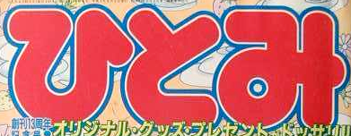

I may be interested in buying an issue or issues off you. Donations also accepted! I'll cover international shipping.
If you're interested, please see my contact page so we can hash out the details.
If you're interested, please see my contact page so we can hash out the details.
What we're after
Anything with Nakano Yayoi in it is of interest to us, but generally speaking, here's the issues containing stuff we'd like to bring to MangaDex.
Please do not attempt to purchase these items just to offer them to me. You're welcome to notify me about listings, though!
ひとみ // Hitomi
If your Hitomi issue(s) belong to the late 80s or later, chances are it's an issue we're looking for.
As a rule of thumb, most of the ones we want have this logo style (ignoring colors):
As a rule of thumb, most of the ones we want have this logo style (ignoring colors):

(This only applies to about 65% of the issues we want. 80s issues don't use it.)
ひとみＣＣミステリー // Hitomi CC Mystery
If your CC Mystery issue(s) are from either 1993, or Late 1994 - Mid 1996, chances are it's got either Psycho Dream or Makai kara Gachon! and is of scanlation interest to us.
We're also interested in specifically the December 1990 issue.
We're also interested in specifically the December 1990 issue.
Misc.
月刊プリンセス // Princess
Interested in the April 1998 issue.
Interested in the April 1998 issue.
なかよしデラックス // Nakayoshi Deluxe
Interested in the March, September, and November 1992 issues. (Volumes 2, 5, and 6.)
なかよし増刊号 // Nakayoshi Special Issue
We're after this, dated August 1997.
プチバースデイ増刊 // Petit Birthday Special Edition
We're after some of these, specifically dated September 1994, January 1995, and October 1995.
るんるん // RunRun
Interested in the July 1997 and January 1998 issues.